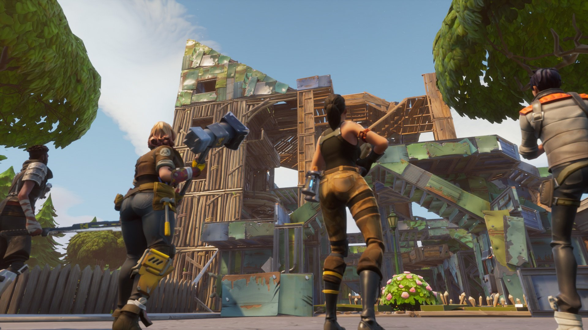
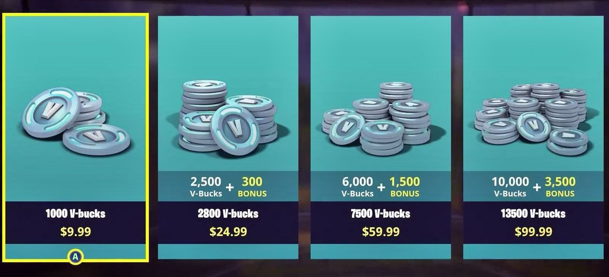
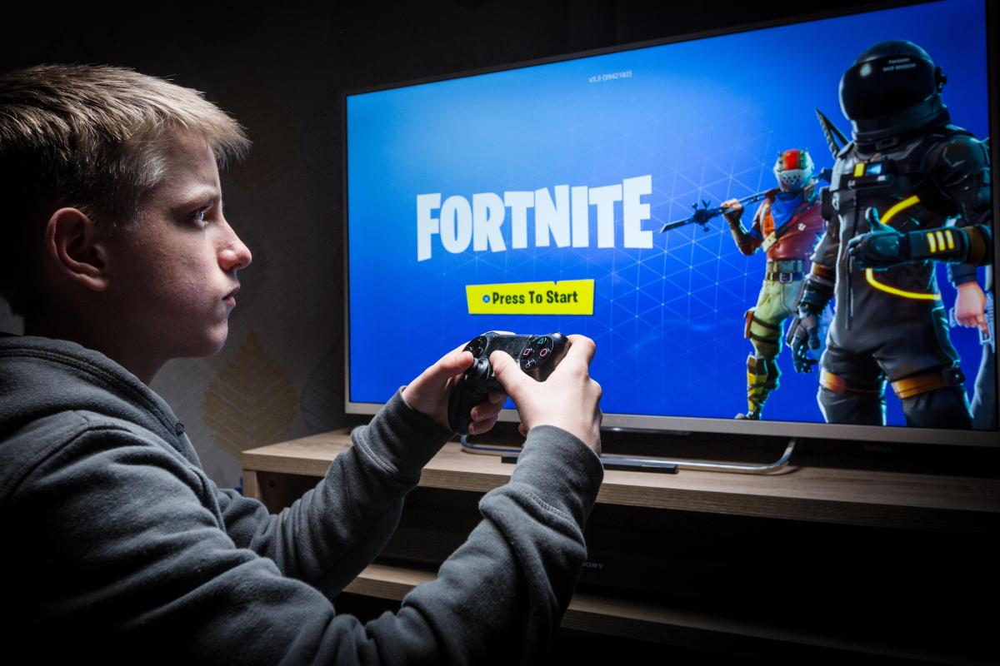

What is Fortnite and how do you play it?
In Fortnite, players collaborate to survive in an open-world environment, by battling other characters who are controlled either by the game itself, or by other players. Violence is cartoonish, but some characters and scenes might disturb younger players. The single-player or co-operative mode (played with friends) involves fighting off zombie-like creatures. But Fortnite’s most popular mode is its standalone free-to-play multiplayer platform, Fortnite Battle Royale, in which up to 100 players enter an online game, competing individually or as part of squads of up to four, to be the last player standing within a ever-decreasing battle arena. To play, players to create an account by providing an email address, which they'll have to verify, and creating a username.

Why is Fortnite so popular?
- It's free, and available on a huge range of devices - Playstation 4, Nintendo Switch, XBox One, PC, Mac, iOS and some Android devices too.
- The gameplay is simple but extremely immersive. Multiplayer games last up to 30 minutes, and players can quickly re-enter a new game, making long sessions extremely easy.
- It is attractively designed and, with weekly updates and challenges, it's constantly evolving.
- In-game currency - V-bucks - allows players to complete challenges for rewards.
- It's culturally huge, with a massive social media following (via video and streaming apps like YouTube and Twitch), so children might feel left out if they don't play.
What steps can you take to safeguard your child?
- If opening account, it is important that they do not create a username that could give away any personal details. There is also no age verification process. Therefore, be aware of the risks if your child has, or wants to, open an account.
- Fortnite offers three levels of privacy settings: Public, where anyone can enter your child’s online party; Friends, where only friends can join a party; and Private, which means that no one can enter your child’s party without being invited by the child themselves. Discuss the level appropriate to your child.
- Fortnite also allows for Voice-Chat to be disabled. Make yourself and your child familiar with the game’s settings and, if you deem it inappropriate, turn Voice-Chat off.
- Speak to your child about unwanted contact and tell them what to do if someone speaks to them in a nasty or inappropriate way, or asks them for personal information. Ask them to come to you if they are unsure about unwanted contact or have be exposed to something inappropriate.
Multiplayer Gameplay
Fortnite’s Battle Royale mode is a multiplayer game where, either individually or in squads, players from around the globe pit themselves against each other in last-man-standing-type games involving up to 100 players. It is from this mode that the real safety concerns around Fortnite stem, and especially its unmoderated chat functionality – as players are open to communications, either by voice or on-screen, from anyone they are playing with. As with other games with chat functions, children may be at risk of exposure to inappropriate language, extremism or, in extreme cases, grooming.
In-Game Purchases
Fortnite is free to play, but by buying a season battle pass, costing $9.99 and lasting a full Battle Royale season (around three months), you can receive bonus rewards, such as skins. The option of buying in-game add-ons can be done with V-Bucks, Fortnite’s in-game currency. You can purchase V-Bucks for cash or earn more V-Bucks via buying a season battle pass, which again costs money. All items that can be bought with V-Bucks are simply aesthetic and do not impact on gameplay. As with all games that offer in-app purchases, it is important to make sure that children do not have access to their parents’ credit card details. It is also important to discuss with children how in-game purchases are designed to entice them in and spend money. However, if they are still adamant that they wish to purchase items on the game, allowing them to do so with their own pocket money can be a great way of giving a child a greater sense of independence. The game’s creators Epic recently had to issue a statement advising how users can protect their accounts. This included third-party sites falsely advertising free V-Bucks in exchange for personal information.
Is Fortnite addictive?
In the wake of the vast popularity of Fortnite – now a reported 350 million players – there have been several reports calling Fortnite addictive for children and claiming that the game induces competition-related rage. The multiplayer in particular is popular, because of the relatively short, but high frequency of games. A player’s game can last anywhere from a few minutes to up to around 30 minutes. The option to join another game is very simple and quick to do, so tempts players with the option to quickly ‘have one more game’. However, it is claimed that Fortnite can promote positive qualities and skills in children and young people; such as teamwork, dexterity and fast reactions. It is important, if your child is playing, to speak to them about what is an appropriate amount of gameplay, and when. It is also important to understand the immersive element of the game and to respect that they may be emotionally invested in a game.
